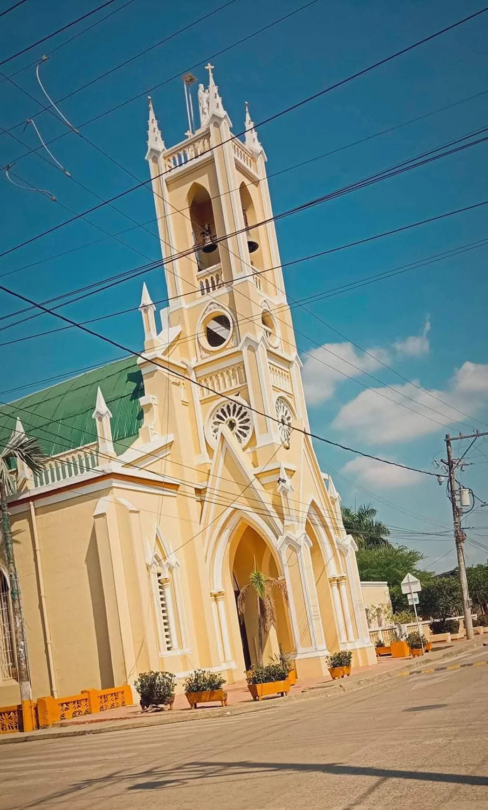
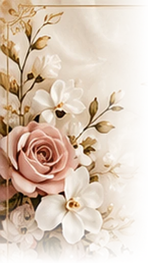
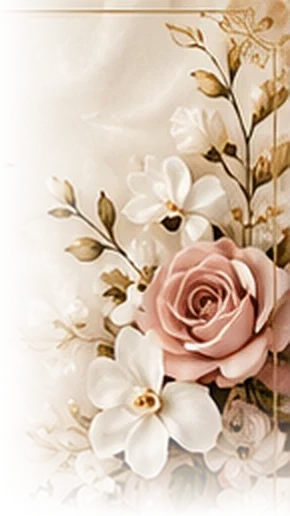
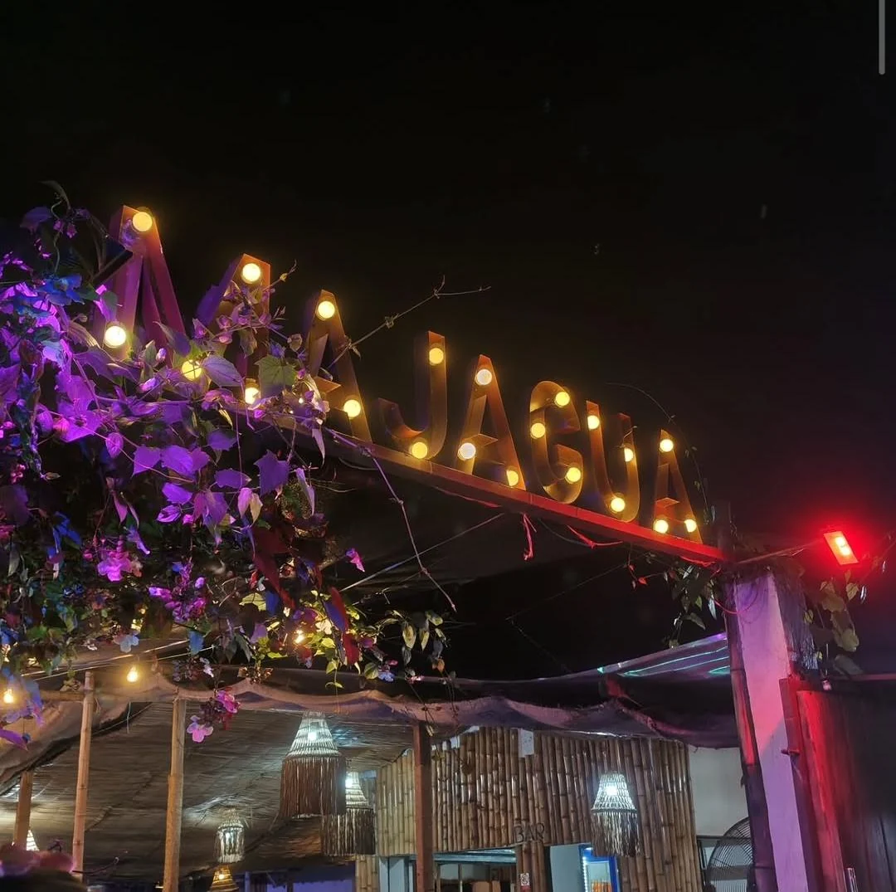

CEREMONIA RELIGIOSA
Nuestro sí ante Dios
Iglesia San José de Majagual
Hora por confirmar



NUESTRA BODA
JOSÉ & ASLY
26 · 12 · 2026
Una historia que continúa…
Lo nuestro sigue floreciendo...
Después de tanto tiempo esperando su momento...
Esta invitación por fin llega a tus manos.
Y ahora damos el paso que tanto soñamos.
Desliza para descubrir nuestra historia.
UN CAPÍTULO DE NOSOTROS
Hay historias de amor que no solo se cuentan, se viven…
Desde 2015, cuando la vida nos cruzó en el momento perfecto, comenzó una historia llena de risas, aprendizaje, aventura y mucho amor.
NUESTROS RECUERDOS
Un lugar para los momentos que nos trajeron hasta aquí.
Crecimos, cambiamos y aprendimos. Y seguimos eligiéndonos.
«Por encima de todo, vístanse de amor, que es el vínculo perfecto».
Colosenses 3:14
DOS LUGARES, UN MISMO DÍA
CEREMONIA RELIGIOSA
Iglesia San José de Majagual
Hora por confirmar

RECEPCIÓN
Gastro - bar Majagua
Barrio Panama
Hora por confirmar

CADA DÍA MÁS CERCA
Cuenta hasta el comienzo del 26 de diciembre. La hora de la ceremonia está por confirmar.
UN DETALLE DE NUESTRA CELEBRACIÓN
Con cariño, José & Asly
ETIQUETA SEMIFORMAL
PARA ELLAS
Vestido de cóctel, conjunto largo o midi, en telas fluidas y frescas (lino, seda, chifón, etc.).
Puedes usar estampados y colores vibrantes. No usar ropa corta ni los colores reservados.
Usa zapatos cómodos y elegantes (puedes usar plataformas).
PARA ELLOS
Camisa de manga larga o corta, en lino o algodón, o guayabera. Pantalón de vestir o semiclásico en dril o lino, en tonos claros o neutros.
Usa zapatos cómodos y elegantes.
Estas imágenes son referencias de estilo. Consulta los tonos reservados a continuación.
DETALLES DE NUESTRA CELEBRACIÓN
Estos tonos están reservados para nuestra celebración. Por favor, evita usarlos en tu vestuario.
Para los hombres se permiten blanco, café, negro y beige.
El rojo queda libre para los invitados.
CON CARIÑO
QUEREMOS CONTAR CONTIGO
Queremos celebrar este día junto a ti. Confirma tu asistencia para que podamos esperarte y preparar todo con mucho cariño.
CON TODO NUESTRO AMOR
26 · 12 · 2026
Gracias por ser parte de nuestra historia.
Los esperamos para celebrar el amor, la vida y el comienzo de nuestro para siempre.